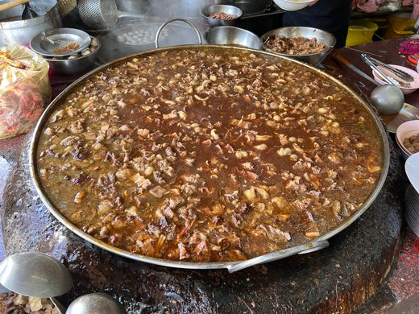

Sopa Perpetuo

Ingredientes
- Carne
- Agua vieja
- Huevos
- Sal
- Consumé de Res
Instrucciones
- Pon al agua a hervir
- Coloca la sal, los huevos, la carne, y el consumé en un sartén
- Con una cuchara, mezcla los ingredientes
- Pon los ingredientes al agua hirviendo
- Espera unos 40 a 50 años
- Preguntar ¿Por qué quise sopa para comenzar?
- Come otra cosa!
Inicio